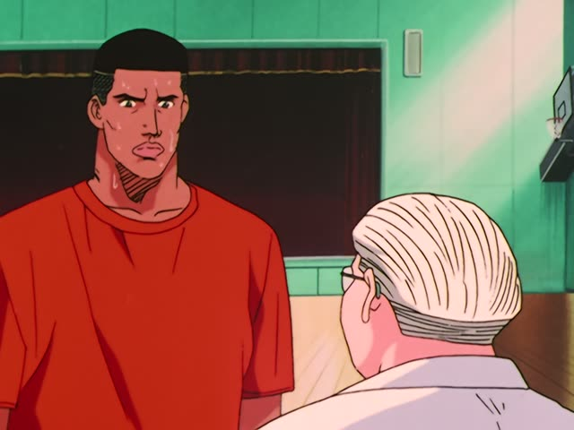
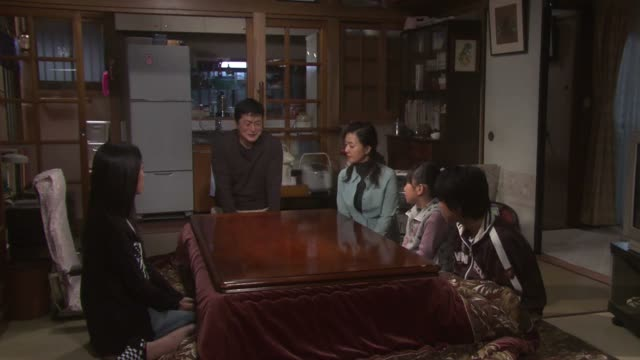
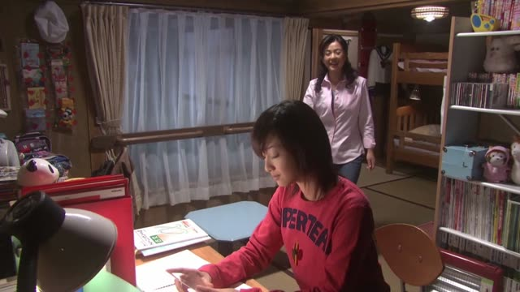

あまり～ない
Midnight Diner: Tokyo Stories · Season 2, Episode 9
父はあまり料理をしない人でした。
"My dad wasn't someone who cooked much."
あまり + a negative means not very, not much. あまり goes before the part it's about, and that part has to be negative: 料理をしない, not 料理をする.
On this card, she's talking about her father. The sentence answers "Did your dad cook?": a little, but not much. Without あまり it would be "a man who didn't cook" at all.
あまり itself never changes. Polite or casual shows at the end: 人でした / 人だった. In speech it's often あんまり.
Dungeon Meshi · Episode 5
外傷が あまりないな。
"Not many outer wounds."
あまり + ない: "not much". On this card, he looks over a body: there are hardly any wounds on the outside.
Quick Examples
A friend asks if the movie was good.
あまり面白くない。
"It's not that interesting."
面白い → 面白くない. あまり needs that ない.
CasualA coworker asks if you drink.
あまり飲みません。
"I don't drink much."
PoliteYour friend asks if you're hungry.
あんまりお腹空いてない。
"I'm not that hungry."
あんまり is the spoken way to say あまり.
CasualThe teacher asks if you understood the explanation.
あまり分かりません。
"I didn't really understand."
PoliteWith and without
このケーキは甘くない。
"This cake isn't sweet." Not at all.
このケーキはあまり甘くない。
"This cake isn't very sweet." A little, not much.
このケーキはあまり甘くないです。
Same meaning, polite.
このケーキはあまり甘い。
あまり needs a negative at the end. Without it the sentence breaks.
Examples from Media

Slam Dunk · Episode 89
足が完治するまではあまり無理しない方がいいですよ。
"Until your leg's fully healed, better not push it too hard."
無理する is "push yourself". あまり無理しない = "don't overdo it".

Shirokuma Cafe · Episode 9
あんまり変わりませんね。
"It doesn't really change."
あんまり is the everyday あまり, still with a negative.

Source unknown No source
東京はあまり自然がないです。
"There isn't much nature in Tokyo."
あまり + ない: not much nature.

Source unknown No source
私は、吹き替え映画は、あまり見ないですね。
"I don't watch dubbed movies much."
見る → 見ない. Adding です makes it polite.

Source unknown No source
だからボウリング場に、僕の足のサイズのシューズがあんまりないです。
"So bowling alleys don't have many shoes in my size."
あんまり, the spoken version.

1 Litre of Tears · Episode 11
あまり、よくなくてな…
"It's not going too well..."
Teasing Master Takagi-san · Season 2, Episode 11
ううん、私もあまりやってないよ。
"Nah, I haven't done much either."
やってない is casual for やっていない. あまり + negative = not much.

1 Litre of Tears · Episode 7
あんまり根詰めないでね。
"Don't push yourself too hard."
あんまり + ないで: not too much.
Further Reading
A Dictionary of Basic Japanese Grammar
Entry "amari" · pp. 72–73